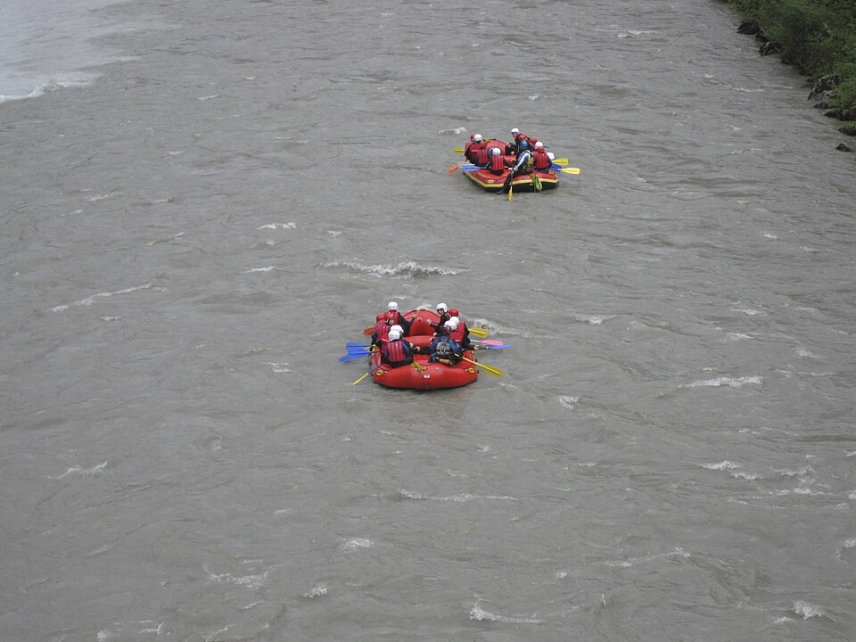
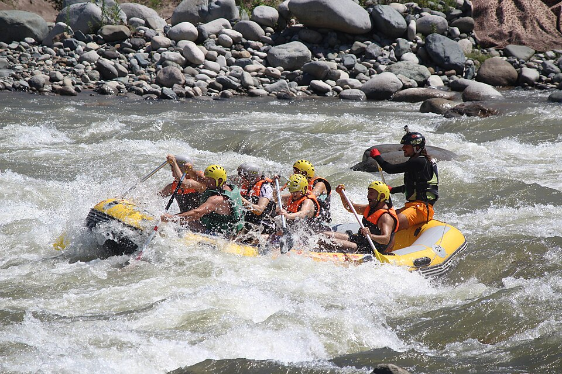
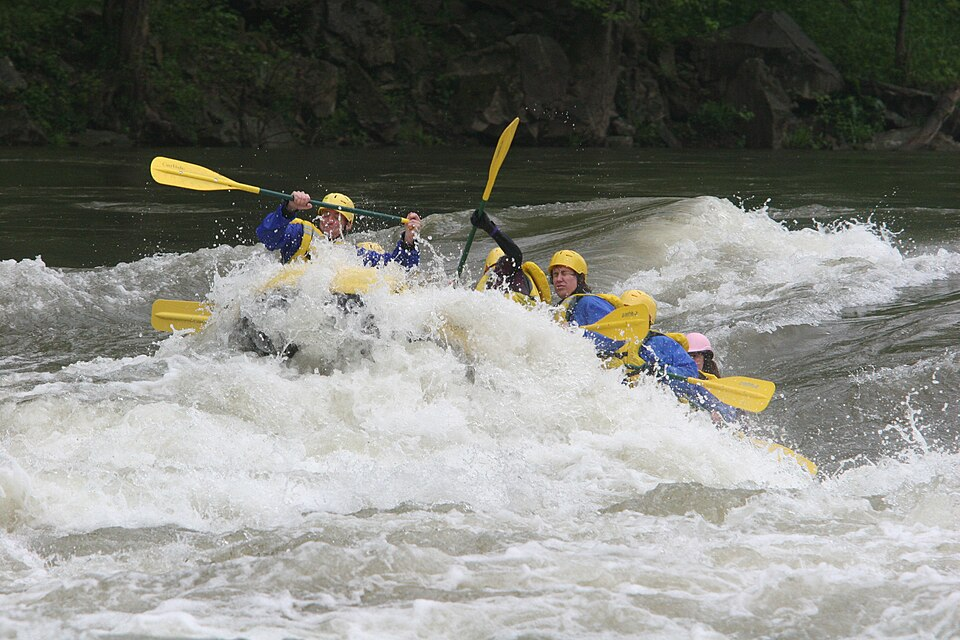
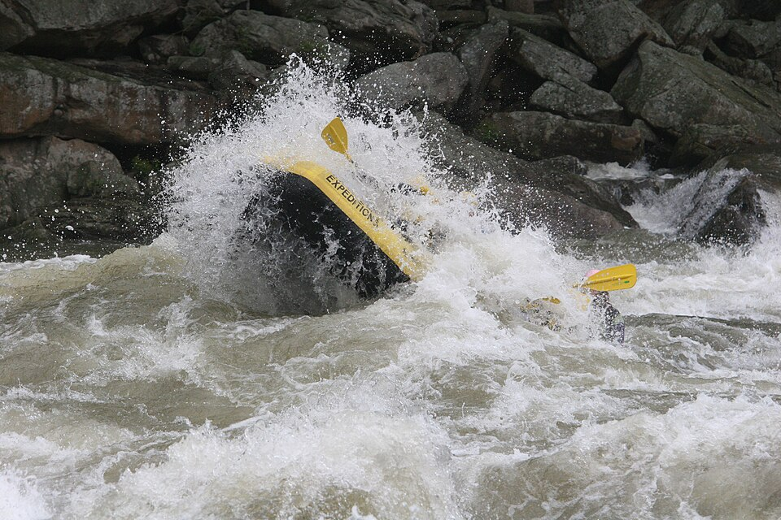
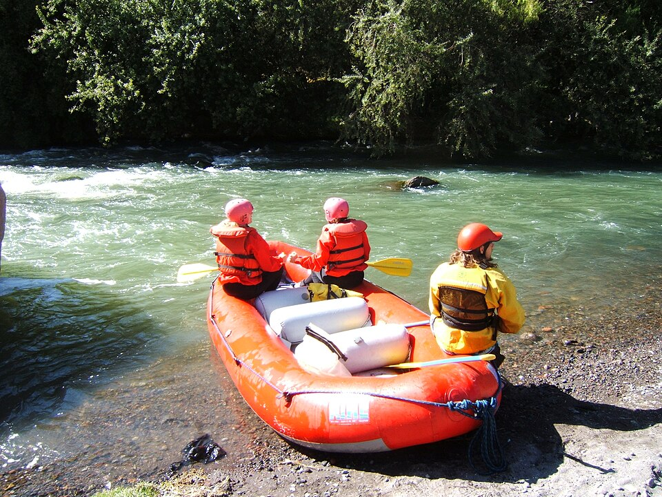
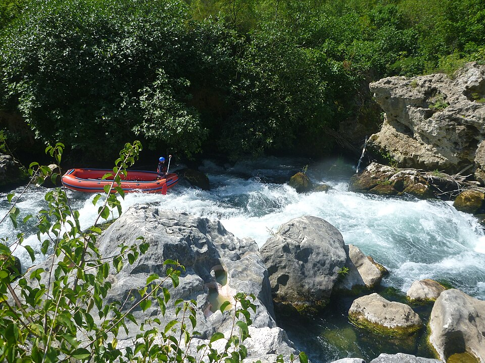

Rapids! Make Memories!
History
Rapids! began floating the river in 1995. Since then, we have welcomed families, friends, and first-time paddlers to explore the water together.

As a family-owned business, we value careful preparation, teamwork, and respect for the river. Our guides help guests choose an outing that suits their group.
Adventure Awaits You!
Choose your next river adventure and make unforgettable memories with Rapids!





Photo credits and licenses
- Elo River rafting: Heri Nugroho, source, CC BY-SA 4.0.
- Fırtına River rafting: Hamdigumus, source, CC0 1.0.
- Rafting 14: Waynestock, source, CC BY-SA 4.0.
- Rafting 31: Waynestock, source, CC BY-SA 4.0.
- Arequipa rafting: Smiley.toerist, source, CC BY-SA 4.0.
- Cetina River rafting: Cookies4ever, source, CC0 1.0.
- Vorderrhein rafting: Paebi, source, CC BY-SA 4.0.